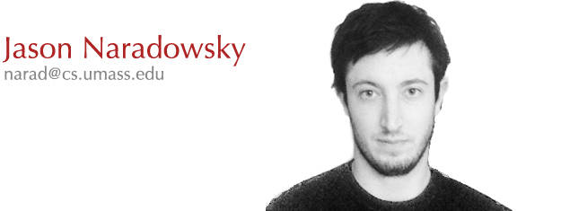

Hello! I'm a fifth and final year graduate student in the
Computer Science Department at
UMass Amherst, and via cotutelle at Macquarie University, where I work in
natural language processing and machine learning. My advisors are
David Smith and
Mark Johnson.
I'm also occasionally in South College, pretending to be a
linguist.
For summer 2012 I am a visiting researcher at the Nara Institute of Science and Technology working with Prof. Yuji Matsumoto, supported by an NSF EAPSI fellowship.
My papers, and my cv.
My Erdős–Bacon number is arguably no greater than 8.
My research focuses on statistical models of natural language processing and acquisition, with an emphasis on joint inference, unsupervised learning and statistical relational learning. In my dissertation I present efficient methods for representing syntax in graphical models, and techniques for leveraging these representations to improve performance on related NLP problems. In particular, I develop methods for training such models in the absence of syntactic annotation, learning latent syntactic representations that best support the desired end task.
My old research statement is still relevant, but not pursued in my dissertation.
Improving NLP through Marginalization of Hidden Syntactic Structure
Jason Naradowsky,
Sebastian Riedel, and
David Smith
EMNLP 2012
[abstract]
[paper]
[bib]
Many NLP tasks make predictions that are inherently coupled to syntactic relations, but for many languages the resources required to provide such syntactic annotations are unavailable. For others it is unclear exactly how much of the syntactic annotations can be effectively leveraged with current models, and what structures in the syntactic trees are most relevant to the current task.
We propose a novel method which avoids the need for any syntactically annotated data when predicting a related NLP task. Our method couples latent syntactic representations, constrained to form valid dependency graphs or constituency parses, with the prediction task via specialized factors in a Markov random field. At both training and test time we marginalize over this hidden structure, learning the optimal latent representations for the problem. Results show that this approach provides significant gains over a syntactically uninformed baseline, outperforming models that observe syntax on an English relation extraction task, and performing comparably to them in semantic role labeling.
Grammarless Parsing for Joint Inference
Jason Naradowsky,
Tim Vieira, and
David Smith
COLING 2012
[abstract]
[paper]
[bib]
Many NLP tasks interact with syntax. The presence of a named entity span, for example, is often a clear indicator of a noun phrase in the parse tree, while a span in the syntax can help indicate the lack of a named entity in the spans that cross it. For these types of problems joint inference offers a better solution than a pipelined approach, and yet large joint models are rarely pursued. In this paper we argue this is due in part to the absence of a general framework for joint inference which can efficiently represent syntactic structure.
We propose an alternative and novel method in which constituency parse constraints are imposed on the model via combinatorial factors in a Markov random field, guaranteeing that a variable configuration forms a valid tree. We apply this approach to jointly predicting parse and named entity structure, for which we introduce a zero-order semi-CRF named entity recognizer which also relies on a combinatorial factor. At the junction between these two models, soft constraints coordinate between syntactic constituents and named entity spans, providing an additional layer of flexibility on how these models interact. With this architecture we achieve the best-reported results on both CRF-based parsing and named entity recognition on sections of the OntoNotes corpus, and outperform state-of-the-art parsers on an NP-identification task, while remaining asymptotically faster than traditional grammar-based parsers.
Combinatorial Constraints for Constituency Parsing in Graphical Models
Jason Naradowsky,
David Smith
Technical Report, University of Massachusetts Amherst, 2012.
Unsupervised Bilingual Morpheme Segmentation and Alignment with
Context-rich Hidden Semi-Markov Models
Jason Naradowsky and
Kristina Toutanova
ACL 2011
[abstract]
[paper]
[slides]
[bib]
This paper describes an unsupervised dynamic graphical model for morphological segmentation and bilingual morpheme alignment for statistical machine translation. The model extends Hidden Semi-Markov chain models by using factored output nodes and special structures for its conditional probability distributions. It relies on morpho-syntactic and lexical source-side information (part-of-speech, morphological segmentation) while learning a morpheme segmentation over the target language. Our model outperforms a competitive word alignment system in alignment quality. Used in a monolingual morphological segmentation setting it substantially improves accuracy over previous state-of-the-art models on three Arabic and Hebrew datasets.
A Discriminative Model for Joint Morphological Disambiguation and Dependency Parsing
John Lee,
Jason Naradowsky, and
David Smith
ACL 2011
[abstract]
[paper]
[bib]
Most previous studies of morphological disambiguation and dependency parsing have been pursued independently. Morphological taggers operate on n-grams and do not take into account syntactic relations; parsers use the ``pipeline'' approach, assuming that morphological information has been separately obtained.
However, in morphologically-rich languages, there is often considerable interaction between morphology and syntax, such that neither can be disambiguated without the other. In this paper, we propose a discriminative model that jointly infers morphological properties and syntactic structures. In evaluations on various highly-inflected languages, this joint model outperforms both a baseline tagger in morphological disambiguation, and a pipeline parser in head selection.
Feature Induction for Online Constraint-based Phonology Acquisition
Jason Naradowsky,
Joe Pater, and
David Smith
Synthesis Project, Presented at NECPHON 2011
[abstract]
[paper]
[bib]
Log-linear models provide a convenient method for coupling existing machine learning methods to constraint-based linguistic formalisms like optimality theory and harmonic grammar. While the learning methods themselves have been well studied in this domain, the question of how these constraints originate is often left unanswered. We present a novel, error-driven approach to constraint induction that performs lightweight decisions based on local information. When evaluated on the task of reproducing human gradient phonotactic judgements, a model trained with this procedure can sometimes nearly match the performance of state-of-the-art methods that rely on global information and individual assessment of all possible constraints. We conclude by discussing methods for incorporating context and linguistic bias into the induction scheme to produce more accurate grammars.
Learning Hidden Metrical Structure with a Log-linear Model of Grammar
Jason Naradowsky,
Joe Pater,
David Smith, and
Robert Staubs
Workshop on Computational Modelling of Sound Pattern Acquisition 2010
Polylingual Topic Models
David Mimno,
Hanna Wallach,
Jason Naradowsky,
David Smith and
Andrew McCallum
EMNLP 2009
[abstract]
[paper]
[bib]
Topic models are a useful tool for analyzing large text collections, but have previously been applied in only monolingual, or at most bilingual, contexts. Meanwhile, massive collections of interlinked documents in dozens of languages, such as Wikipedia, are now widely available, calling for tools that can characterize content in many languages. We introduce a polylingual topic model that discovers topics aligned across multiple languages. We explore the model's characteristics using two large corpora, each with over ten different languages, and demonstrate its usefulness in supporting machine translation and tracking topic trends across languages.
Improving Morphology Induction by Learning Spelling Rules
Jason Naradowsky and
Sharon Goldwater
IJCAI 2009
[abstract]
[paper]
[slides]
[bib]
Unsupervised learning of morphology is an important task for human learners and in natural language processing systems. Previous systems focus on segmenting words into substrings (taking => tak.ing), but sometimes a segmentation-only analysis is insufficient (e.g., taking may be more appropriately analyzed as take.ing, with a spelling rule accounting for the deletion of the stem-final e). In this paper, we develop a Bayesian model for simultaneously inducing both morphology and spelling rules. We show that the addition of spelling rules improves performance over the baseline morphology-only model.
Polylingual Topic Models
David Mimno,
Hanna Wallach,
Limin Yao,
Jason Naradowsky and
Andrew McCallum
The Learning Workshop (Snowbird) 2009
Natural Language Toolkit (NLTK):
The Natural Language Toolkit is a collection of open source Python modules that can be used freely for research or pedagogical purposes. There's also a book out now documenting how to use the NTLK - it doubles as an introductory computational linguistics coursebook.
For the summer of 2008 I worked on the NLTK while sponsored under the Google Summer of Code program, during which time I implemented a suite of dependency parsers under the supervision of Sebastian Riedel and Jason Baldridge.
{kind=link}